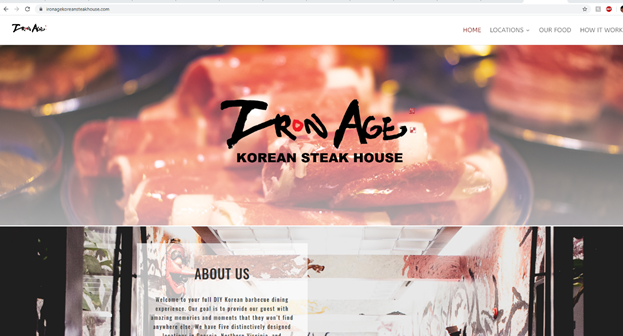
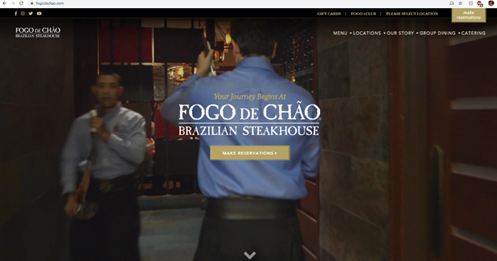
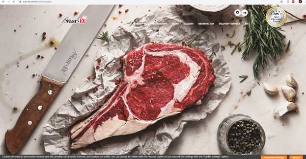
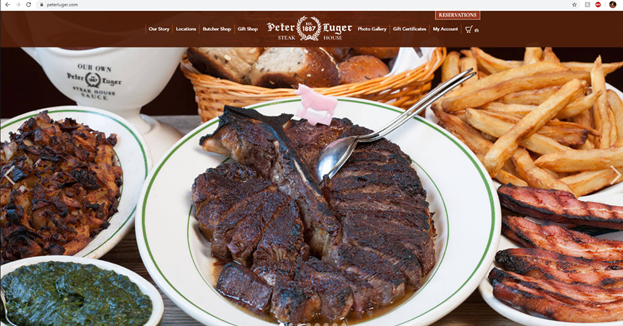
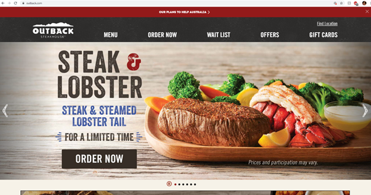

5 food website critique
https://ironagekoreansteakhouse.com/

For a good
restaurant website:
Target
audience, the target audience is very clear because it’s in the name of the
sites title, it says Korean steak house which means it is more directed towards
Korean cuisine however the site is set up in a way where it is easy to
understand allowing other audiences to check out the site and eat at the
restaurant.
Simplicity,
like I said, the site is set up in a very intuitive way so a wide range of users
can easily understand how to use the site and get the information they need.
Color
scheme, the color scheme of the site is dark blue, black, white, and red which
helps with the aesthetic of their restaurant and brand/look.
Easy contact
form, each location page contains an easy to use contact form allowing users to
add their name, email, and message or they also provide users with their email
as well incase the need to send an email elsewhere to them. The contact form is
also placed in a convenient spot under their phone number as well.
Social able
is the one area I think this site lacks in the most because there is no social
media connection so users can’t connect more with the restaurant.
High quality
images is also an area I think this website lacks in because the pictures are
all dark which normally causing camera to have a harder time taking sharper
images with a good focus, which might be an aesthetic they’re going for, but
this is different because the images are still not high quality.
About us
page is above average for this site, it is very short and doesn’t have too much
of an impact on the reader, they just give a small history about their store
which is nice but nothing else beyond that.
Logo
placement is in a very good spot being the first thing users see when the page
loads up which helps people recognize the store faster in real life.
There is not much taking away from the irreducible
simplicity (satisfaction) of the site, it’s very straight forward but they
do add pictures of the food which can make the experience more appealing.
The site does contain immediate intuition, it’s
very simple and easy to use while being logical for users to select what they
want to find information.
There seems to be no beauty underneath because
the website is just there to provide information, no other gimmicks to help the
experience get better like online reservations. The only thing I can see would
be the map under each location that allows users to click and drag the map to
view other areas around it.
I don’t think this site is the best for approachable innovation.
It is very bare bones and doesn’t contain some of the more convenient features
that other sites could incorporate, I think this site is more on the boring side
of the spectrum but there’s nothing wrong with that for its purpose.
There is no real form and color agreement except for
the main colors the restaurant themes itself with, they go for a dark blue,
black, and red color scheme to help establish its brand and look.
I think this site has a repeatable methodology
because this can be applied to each of their locations pages and same can be
said for their product too because the experience is unique.

For a good
restaurant website:
Target
audience is a more upper class setting because one of the first things you see
is “your journey begins at” right above the logo implying this experience will
be like no other making it unique and more special than other restaurants. They
also use fancier words like “culinary experience” to appeal to a more
upper-class audience.
Simplicity,
this site is very simple while also looking unique. They also convey their
message and what they do with a video that plays in the background of the site.
Color scheme
has a black and gold like color scheme which looks more modern and richer.
Easy contact
form is very detailed and ask for a lot of information which can be a problem
for many people, for example, they ask for home address and email. Many people
may not want to give away their home address, but the site gives its head
quarters address away right away.
Social able,
this site has multiple social media accounts people can click on the top and
has an eClub users can join to get emails about their
news etc. I think these are nice additions to a site to get more connection
with the audience.
High quality
images are very relevant in this site with nice bright images with a single
focused person or environment however, even though the background is blurred it
still conveys a nice environment and the feel of what they want people to see.
About us
page is also very nice, it plays a video but can be skipped to see a timeline
with very nice images and a brief description. Overall, a very immersive about
us page which is unique.
Logo
placement is right in the center of the home page and is in a good spot.
The irreducible simplicity (satisfaction) of the site, it’s very appealing because of the video playing in the background of their environment and process.
This site is also immediately intuitive because of the essential information is on the top of the page.
They do have some beauty underneath by adding key features like reservations to make the process much easier for the user to get more information etc.
In terms of approachable innovation, the site does look very nice, but this doesn’t mean there is much innovation. They could use what they must better express themselves but overall still very good.
Form and color agree with each other be cause the colors are mainly black and gold which is simple like the layout of the site.
A lot of the key functions like reservations can be applied
to other sites as well which is good because they can establish a repeatable
methodology and user interface.
https://www.nusr-et.com.tr/en/home.aspx

For a good
restaurant website:
Target
audience is made clear with the image you see right away but it may not be as
clear. I see that meat eaters would be the target audience because all you see
is a high-quality piece of meat with a large bowl of salt implying this is
“Salt Bae” and many of the audience may know him for that. I can also see how
the color scheme of black and white looking modern is directed to an upper
class as well.
Simplicity,
the site is very straight forward and makes tabs visible on the top while
scrolling down can access the same information as well making user experience
better because they learn they don’t have to click many things. The audience is
also put in consideration because this restaurant is a multinational business
so on the top right you can see a language selector on the top.
Color scheme
is very black and white making it look modern, clean and simple.
Easy contact
form is not really seen on this site. Instead, the closest thing they have is a
delivery service information and reservations then they show a phone number. It
is not as intuitive to get the information you need unless you know your
location you want to go but no overall contact form
Social able,
this site does have a link to an Instagram account which leads to “nusr_et”
account which is “salt bae” Instagram account where most of his audience would
know him for. The founder of this restaurant started off as a trend on YouTube
and gained a massive following.
High quality
images are everywhere throughout the site which makes the food more appealing
but there are no images on the environment of the restaurant.
About us
page is very strong and has bold statements and gives a sense of loyalty to the
guest and the quality. I think it has a very good code/mission statement listed
and adds to the feel of what the restaurant gives to their audience.
Logo
placement is not very relevant, it is placed on the top left however, I can see
the logo also on the knife in the home screen which helps people notice it.
However, part of the logo or brand of the chief’s look is salt and meat which
are included in the center. In this case, I can see how the logo isn’t as
important but the brand he is trying to build up.
There is not much taking away from the irreducible
simplicity (satisfaction) of the site, it’s very straight forward but they
do add pictures of the food which can make the experience more appealing.
The site does contain immediate intuition, but
it could also use some work, for example, the top right has a language selector
because this restaurant is a multinational business but it isn’t too clear
because it is next to the Instagram logo which makes it look like another social
media site. Also, to find some information you would have to select a location
which doesn’t seem like what you must do to find contact information based on
the layout of the site.
There seems to be very little beauty underneath,
the only thing I can see would be the subtle call back to what made the chef
famous in the first place, being “salt bae” which featured him applying salt to
food in a unique way which is conveyed in the home page.
I don’t think this site is the best for approachable innovation.
It is very bare bones, but they do incorporate a delivery section however, this
doesn’t really mean this site innovates.
There is no real form and color agreement because the
site basically uses black and white for its main colors but once you scroll
down past the initial picture, the site becomes less appealing and more boring
until the very end where there’s a touch of fire but that’s all.
I think this site has a repeatable methodology because this can be applied to each of their locations pages which is beneficial because the chef is opening new locations a lot and franchising.

For a good
restaurant website:
Target
audience is a more upper-class type of diners because right on the top, you can
see the logo and the year it was established hinting at how long they’ve been
in business and adding a type of prestige to their name. They also have a
butcher shop which is something not many restaurants say they own which adds to
the upper-class audience look.
Simplicity,
the site is very simple by having a list of tabs on the top and categorizing
itself in 3 main areas when you scroll down but when clicked on each topic
gives more information on a separate page.
Color scheme
is very old fashion type of style with neutral colors and a wood texture while
staying modern looking. This helps add to their long history and prestige
image.
Easy contact
form, there isn’t really a contact form, however they have reservations and
online booking which is the only form on contact you have with the restaurant.
The online booking is very detailed and simple to use with easy steps on how to
do it and what users need to know.
Social able,
even though there isn’t any social media links on the site, they do have an
account system and a card application which helps users stay connected with the
restaurant on a more serious level and making an account can also help speed up
the user experience when making butcher orders, tracking orders, etc. So, this
gives more functionality to the site than an Instagram account in most cases.
High quality
images are present in the center of the home page, but they also tell a story.
About us
page is very informative and straight forward but instead of going through a
mission statement, due to the long history, the page goes more in depth about
the history and the founder himself and how they operated back then. They also
go through what kind of beef they select and how they select their beef, which
is a big part of this restaurant’s name and what they do with the beef. This is
a very transparent approach to the about you page that I think is very
different.
Logo
placement is in a pretty good spot, it is placed in the top center of the home
page and has high quality images in a slide show showing off who they are and
how they do things.
There is a little bit taking away from from the irreducible
simplicity (satisfaction) of the site, it’s very straight forward and a
little too simple. There’s just one main image then under it a lot of
information for the user to process which is functional but may not be the most
appealing look.
The site does contain immediate intuition, it’s
very simple and easy to use and provides all the information on the bottom in
one window so users can see everything they need to know.
There is beauty underneath however because the
site uses images in a slide show at the beginning of the home page which tells
a nice story about who they are.
I think this site is the best for approachable innovation.
Even though it is very simple, it is what they used with their simplicity to
innovate how they convey their message and look of the restaurant. The main
thing I’m talking about is the picture slide show in the beginning, not only do
they have nice pictures like every other restaurant site, they tell a story with
them in a subtle way.
There is no real form and color agreement because the
site is still very simple, and the colors are just a natural wood look and
brown color.
I think this site has a repeatable methodology because there are links to other things this restaurant does like butchering. These design choices on their site and functions can be added to other parts of their page to enhance user experience.

For a good
restaurant website:
Target
audience is a more casual dine in type of audience because this restaurant has
many convenient features like online ordering, pick up, and delivery. They also
provide gift cards which is more targeted to a middle class. I can also tell
because they include information like “limited time” and “offers” implying the
price can go down to appeal to this audience.
Simplicity
is okay for this site, right away you are hit with a sign-up box distracting
user from the main content which can make things a little more complicated if
the user decides to sign up for offers and rewards. Besides that, the rest of
the home page is not too bad, right away you see their latest promotion and any
organizations they try to help (Australia donations etc.) However, most of that
information can be seen when you scroll down.
Color scheme
is pretty good, it has a black and red color scheme which relates back to the
Australian flag but in a more modern look. It helps establish its brand and
stays consistent throughout the site.
Easy contact
form is not really present on this site, the only things I see related to this
would be a feedback tab when you select a location which is just a mini survey
and also on the bottom of the home page, there’s a sign up sheet for rewards
but that’s more of a one way type of contact.
Social able,
this site is very social able trying to get users to sign up for rewards which
makes them a little more exclusive if they sign up which means more people
could possibly be more connected and they also link their Facebook, Instagram,
and twitter accounts on the bottom of the home page.
High quality
images are present on this site, but they take it a step further and include
graphic art as well, not just food.
About us
page is not present on this site at all which I can see is a missed opportunity
because users won’t have a feeling of connection to the site and brand as much.
Logo
placement is in the top left corner of the site consistently but also placed on
every pop-up message to reinforce the outback logo recognition.
There is a lot taking away from the irreducible
simplicity (satisfaction) of the site, there are multiple pop up messages
that can interfere with the experience of the site.
The site doesn’t contain immediate intuition
as well, there are constant distractions on the site like ads telling me about new
offers, reward sign ups, and donations they are taking for a cause.
There seems to be no beauty underneath because
the website is just there to provide information about the food itself and
seems like they are pushing lots of things on the consumer.
I don’t think this site is the best for approachable innovation.
It has a lot of functions for users, but these are things that can also be
found on other websites. The only innovative thing I can see from them would be
the donations for saving Australia because the Australian outback is part of
their brand and finding a cause to help this is a little innovative.
There is form and color agreement however because the
site has a consistent red and black color scheme that isn’t too distracting so
the user can focus on what the site must show.
I think this site has a repeatable methodology because this can be applied to each of their location’s pages.